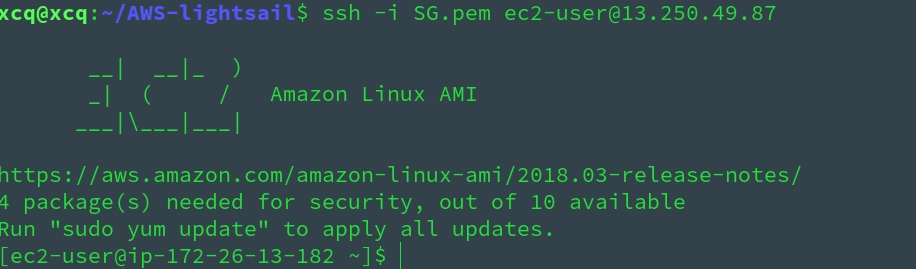
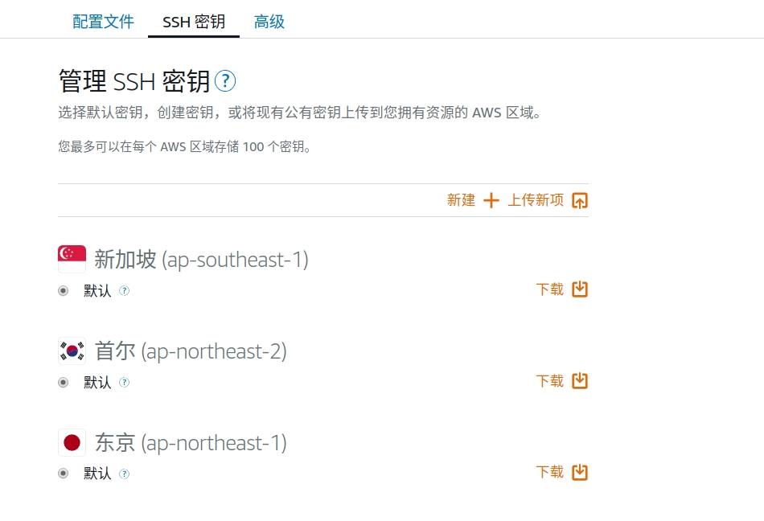
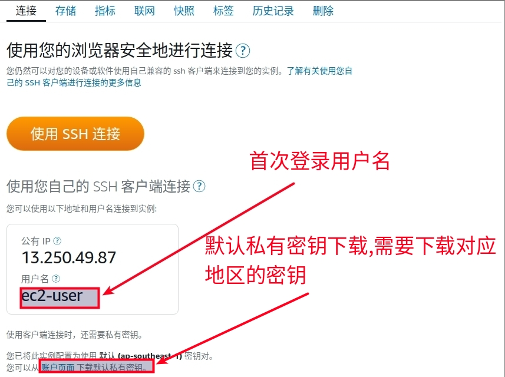
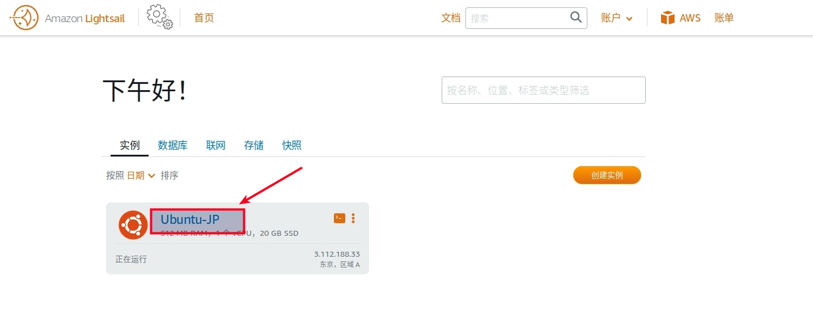
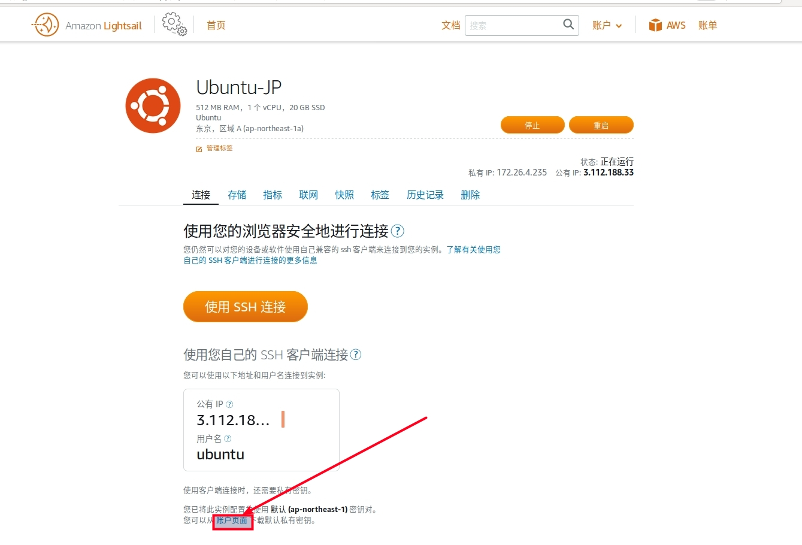
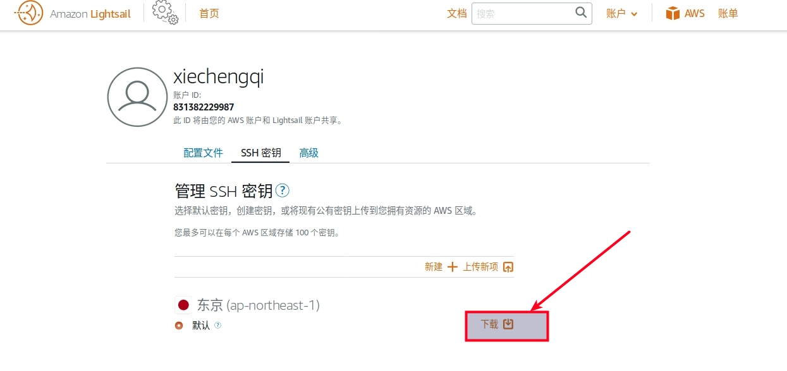
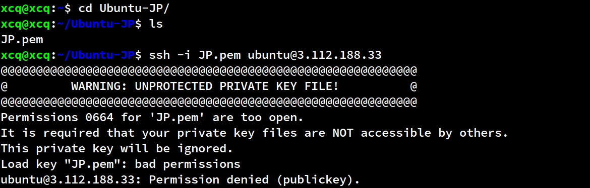
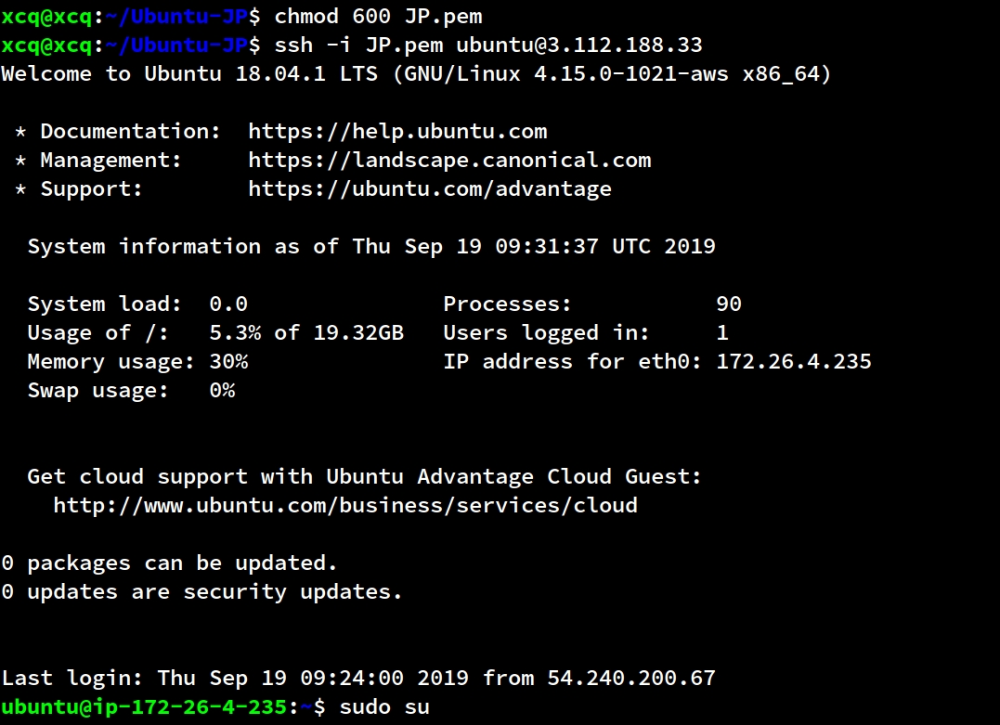
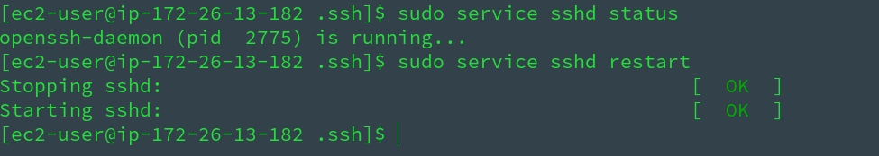

AWS LightSail 创建和基本配置
本地使用 ssh 命令行登录
步骤讲解
1、首次登录命令: ssh -i xxx.pem username@host_ip

使用密钥直接登录无需密码
使用密钥直接登录无需密码
2、xxx.pem 可以在 aws lightsail 服务器控制台下载 ( Lightsail 在您创建实例的每个 AWS 区域中创建一个默认密钥对 )

每个地区都有自己的默认密钥
每个地区都有自己的默认密钥
3、首次登录用户需要在实例的 "管理" 中的 "连接" 页面查看

4、登录后切换成 root 用户, 设置 root 密码
sudo su
passwd root
5、修改 /etc/ssh/sshd_config 文件
# 被注释去掉注释, 是 no 的改为 yes
PermitRootLogin yes
PasswordAuthentication yes
6、最后修改 /root/.ssh/authorized_keys , 删除 /root/.ssh/authorized_keys 中 ssh-rsa 前面内容 ( 没有则不修改 )
7、重启 ssh: sudo service sshd restart
8、再次登录时即可使用 ssh root@host_ip,之后输入密码即可登入
- 若想使用普通用户登录, 需要切换到 root 下修改普通用户登录密码, 并且需要如上面一样修改
/home/用户名/.ssh/authorized_keys,重启 ssh 后退出再次登录即可使用普通用户
实操截屏



下载私钥到本地
下载私钥到本地

本地切换到私钥目录
本地切换到私钥目录

本地修改私钥权限为 600
本地修改私钥权限为 600
登入远程服务器, sudo su 切换到 root 用户并修改 root 密码
PermitRootLogin yes PasswordAuthentication yes

修改 /root/.ssh/authorized_keys
修改 /root/.ssh/authorized_keys
重启 sshd 服务
ssh root@ip 登录